Lighthouse · Pipeline A vs Pipeline B
Same request, same cap (9 clips, about 45 s), same models (nano-banana-pro images, wan-3.0 720p clips with audio). A = the user's state graph with seed-frame editing. B = a research-based design (StoryMem, VideoMemory, FilmWorld, Captain Cinema, Co-Director).
A · state graph + seed frames
Run page: lineage, decisions, cue sheet →B · memory bank (research)
Run page: memory, keyframes, judge, cue sheet →One frame per clip (mid-clip)
A
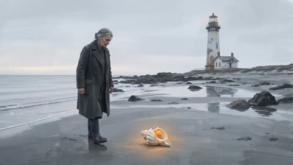
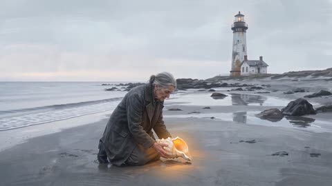
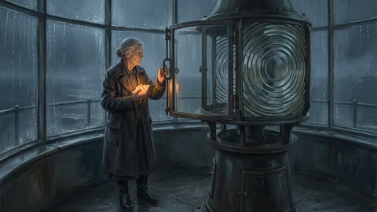
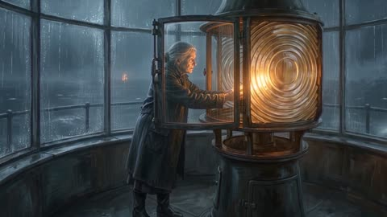
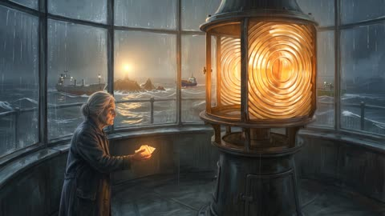
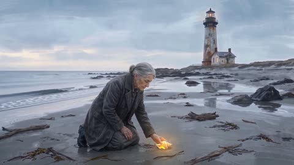
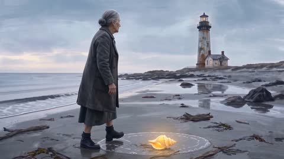
B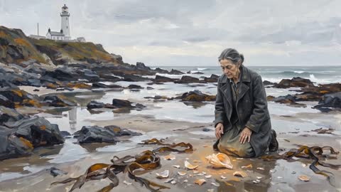
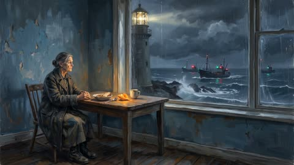
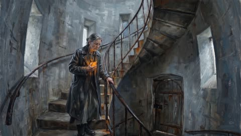
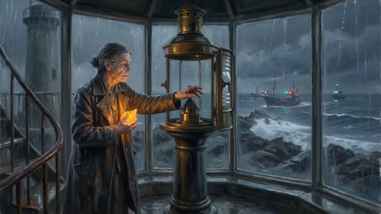
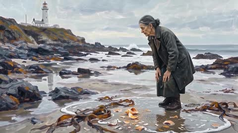
Numbers
| A · state graph | B · memory bank | |
|---|---|---|
| Credits (lighthouse run) | 8,320 | 8,320 (+880 superseded probe jobs) |
| Wall time | 37.6 min | 39 min |
| Credits (all, incl. probe + grandma) | 10,160 | 9,880 |
| Grandma (1 clip, upload) | 480 credits · upload used directly as start | 680 credits (200 on an unneeded anchor, rule fixed) |
| Continuous seams | frame 0 dropped + luma offset; SSIM 0.992 on the clean join; edited starts broke seams (0.956, 0.434) → repairs now only for missing/identity faults | median jump 2.33 → 1.02; seam SSIM 0.988–0.998; no motion reset (judge) |
| Self-check | verifier vs wanted state per frame; failed frames accepted forced with faults on record | gate per keyframe + vision judge on the cut: 72/100 |
What each kept, and what broke
A
- Keeper identity held in all 9 beats.
- Same-place cuts come from old frames: the return to the beach (b8) was seeded from beat 2, so the lighthouse + cottage match the opening.
- Lamp is a person-sized Fresnel beacon, not a lantern; dark → lit as versions.
- Location versions carry forward (storm driftwood on the beach).
- Shell drawn 3–4× too large in every frame; flagged in all beats, never fixed after 3 tries, accepted forced.
- One of three ships missing in b7; lamp size flagged in b5/b7.
- Fixes made after the run are not in this video (re-run ≈ 8k credits).
B
- Keeper identity held in all 9 shots.
- Shell palm-sized from shot 2 on: scale anchor = shell drawn in the keeper's palm, not alone.
- Room carries across the cut (table, window, lighthouse through the window).
- Smoothest continuous seams of any run so far.
- Shot 1 shell still too big (foreground of a wide shot).
- Lamp reads as a lantern; shot 5 keeper descends instead of climbing; lamp lit one shot early; lamp only dims in shot 4.
- Shell glow too strong throughout.
Audio (both)
- wan-3.0 clip sound (free) with ambience + effect cues in the prompt; one looped bed per location so the sound does not reset at each clip; final about −16 LUFS.
- Editable cue sheet (
cues.json): beds, effects, music in/out/swell flags. B re-renders the mix with--remixat zero credits. - Gap in both: no music or sound-effect endpoint on Magic Hour, so the score is a synthetic placeholder pad. Real score needs an outside provider key.
Pipeline A · v3 rerun (fixes + palm anchor)
A v3 · 9 clips, 45 s
Run page →- 7,920 credits · 41.7 min · same 9-beat timeline as v2, so it compares one to one.
- Shell first drawn in the keeper's palm and registered as the root of its state graph; size retries now re-source from that anchor.
- Shell size vs real: median 3.8× → 2.9×; hand-held beats about 2× (were 2.6–2.7×); within 2× in 4 of 13 frames (was 1 of 15).
- Continuous starts never edited: all three continuous seams SSIM 0.992–0.995 (v2: 0.956 and 0.434).
- Lens beacon, keeper and beach with lighthouse + cottage stay consistent.
- Shell still 4–7× in wide beach shots where it lies in the foreground away from the keeper.
- 5 of 7 cuts accepted with soft faults (pose, position, grip) after 2 retries each: the main credit sink.
- A duplicate frame still sits at two continuous joins.
A v2
A v3
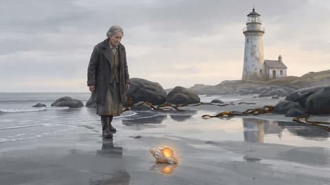
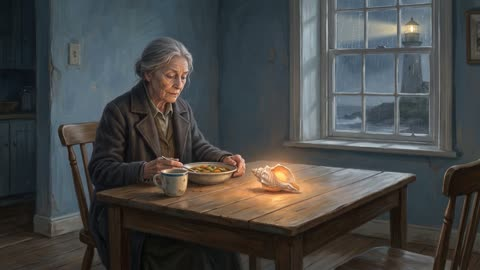
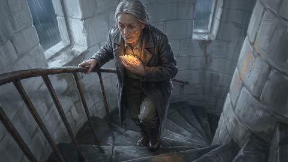
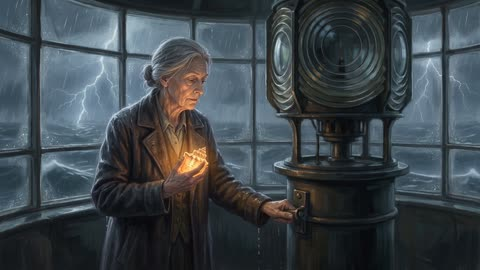
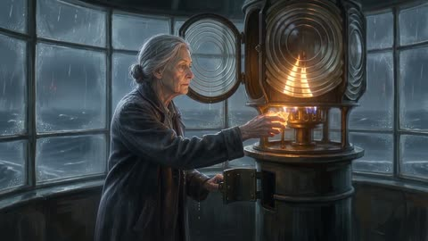
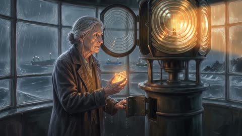
Pipeline B · more versions (30 s each)
Lighthouse v2 · 6 clips
Run page →- 6,480 credits (two network failures; finished with
--resume, only missing clips re-run). Judge 67.4/100 (re-scored on the full 30 s cut). - Shell small (palm-sized glow) on the beach in every shot; beach, rocks and lighthouse match at the start and end.
- Storm and ships seen through the tower glass; lamp lit.
- Keeper looks younger with dark hair in the tower shots (3–4): identity drift after the cut.
- Lamp is a small lantern again (no person-sized beacon).
- Shots 4 and 6 started from a repaired (edited) frame because the shell / keeper left the last frame; the judge flags both continuous joins as a visible jump.
- Judge: lamp small without its lens, shell oversized in shots 1 and 6, the blackout and the ships' turn not clearly shown.
Desert → Tokyo car · 6 clips
Run page →- 6,280 credits · judge 62.5/100.
- Grey coupe in both places; Tokyo street (rail bridge, konbini) consistent across the Tokyo shots.
- The Tokyo car is a slightly different model: darker multi-spoke wheels, different nose.
- Judge: emblems on an "unbranded" car, dust cloud too broad, camera drifts from the planned framing.
- Shots 4–5 barely move (continuous shot holds almost the same frame).
Lighthouse
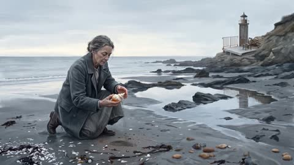
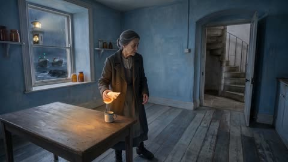
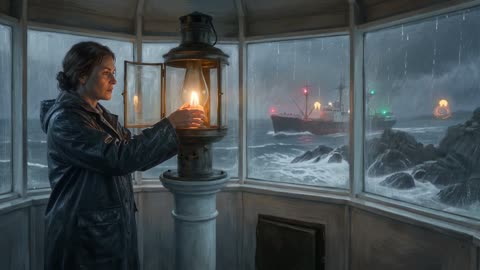
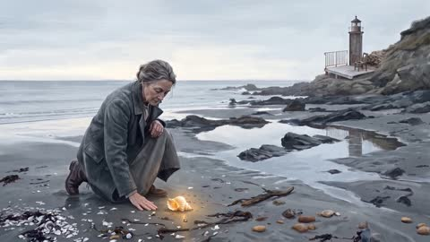
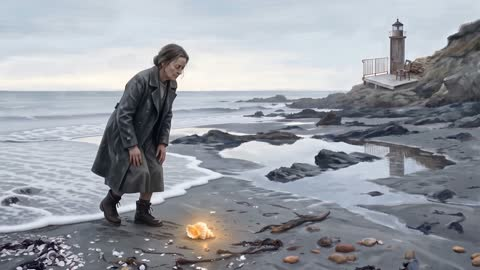
Car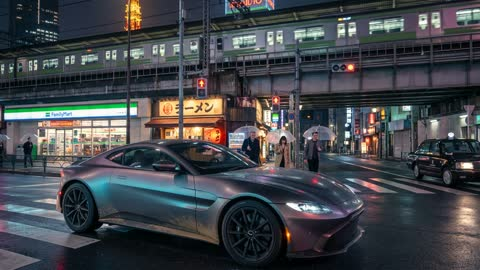
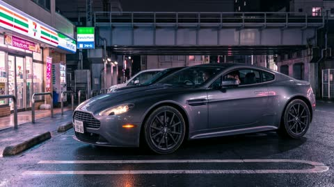
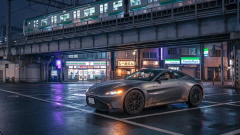
Baseline for reference: pipeline v2 lighthouse v1 (120 s, silent).